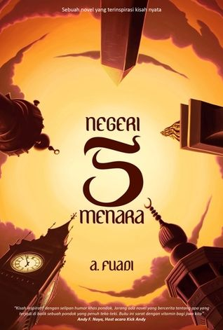

Bedah Buku: Negeri 5 Menara
Ditulis oleh Ahmad Fuadi

Buku ini menceritakan tentang perjalanan hidup Alif, seorang anak minang yang menempuh pendidikan di pondok pesantren madani. Awalnya penuh keraguan, namun perlahan Alif menemukan makna perjuangan, persahabatan, dan kekuatan impian.
"Man Jadda Wajada - siapa yang bersungguh-sungguh pasti akan berhasil"
Kalimat itu menjadi semangat utama dalam buku ini. Kisah yang ditulis berdasarkan kisah nyata ini begitu mengispirasi, terutama bagi pelajar yang sedang mengejar mimpi mereka. Penulis berhasil menyampaikan pesan-pesan moral melalui narasi yang hidup.
Buku ini cocok dibaca oleh remaja dan orang dewasa yang sedang mencari motivasi hidup. Cerita persahabatan, perjuangan, dan cinta belajar membuatnya menyentuh dan relevan bagi pembaca di berbagai usia.